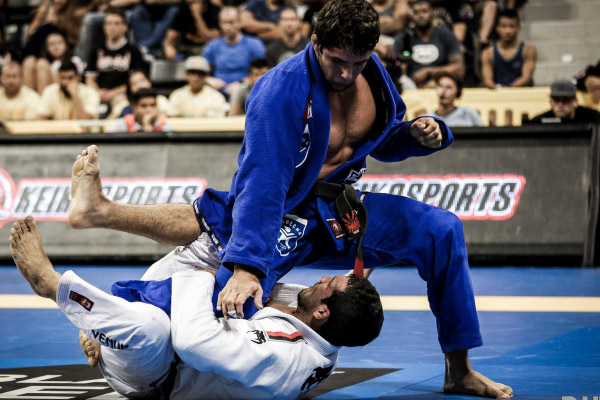

Este artigo ou seção cita fontes, mas que não cobrem todo o conteúdo. Ajude a inserir referências. Conteúdo não verificável pode ser removido.—Encontre fontes: ABW • CAPES • Google (N•L•A) (Abril de 2012)
Nota: Se procura o livro escrito por Hélio Gracie, veja Gracie Jiu-Jitsu (livro).
Golpes proibidos (CBJJ)
De 4 a 12 anos
De 13 a 15 anos
De 16 a 17 anos e adultos
De adulto a sênior 5 (faixas azul e roxa)
Adulto a sênior 5 (faixas marrom e preta)
